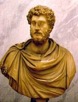

Augusto (63 a.C. - 14 d.C., emperador: 27 a.C. - 14 d.C.)

General, pol�tico y el primer emperador romano. De gran paciencia y habilidad, transform� la vida romana trayendo prosperidad y paz al mundo grecorromano. Su verdadero nombre era Cayo Octavio, el cual cambi� tras la muerte de su padre adoptivo, Julio C�sar, primero por Cayo Julio C�sar Octaviano y despu�s por Augusto o C�sar Augusto.
Octavio naci� en Roma el 23 de septiembre del a�o 63 a.C. Hijo de un pretor y de Atia, sobrina de Julio C�sar. Era sobrino nieto de Julio C�sar, a quien sucedi� como gobernante del Estado romano. C�sar estaba orgulloso del joven y lo present� en el Colegio de Pont�fices (sacerdocio principal romano) a la edad de diecis�is a�os. Cuando C�sar fue asesinado en el a�o 44 a. C., Octavio estaba en Iliria, donde serv�a en el Ej�rcito; a su regreso a Italia, se enter� de que era el heredero adoptivo de C�sar.
Trajano (30 - 117; emperador: 98 - 117)

Trajano fue el primer ciudadano romano de origen provincial (era de Hispania) que accedi� al trono imperial. Pronto destac� en la carrera militar tanto en Germania como en Oriente. Renov� el Senado al nombrar senadores procedentes de las provincias orientales y fue eliminando numerosas tareas que fueron conferidas a la burocracia. Llev� a cabo un intenso programa de infraestructuras tanto para el desplazamiento de las tropas como para el comercio, que se vio favorecido. Puentes, calzadas y canales fueron construidos. La pol�tica exterior estuvo enfocada hacia la conquista. Convirti� Dacia en provincia romana con lo que el mar Negro quedaba bajo su influencia. La campa�a est� narrada en los relieves de la famosa Columna de Trajano. Un ataque de par�lisis le provoc� la muerte en Cilicia.
Adriano (76 - 138; emperador: 117 - 138)

Adriano naci� en la ciudad b�tica de It�lica, en el seno de una familia romana. Al quedar hu�rfano, fue adoptado por el emperador Trajano. Busc� la paz como m�ximo objetivo.. Uno de sus primeros objetivos ser�a conocer los problemas de los s�bditos imperiales por lo que llev� a cabo una amplia serie de viajes por todos los confines del Imperio, haci�ndose eco de las necesidades que le eran presentadas. En el a�o 134 regres� definitivamente a Roma. Este momento de paz trajo prosperidad econ�mica al imperio. Adriano tambi�n se interes� por las reformas administrativas y econ�micas. En las cercan�as de T�voli edific� una suntuosa villa que recibe el nombre de Villa Adriana donde recogi� las reproducciones de las obras de arte que m�s le impresionaron durante sus viajes. Como sucesor eligi� a Antonino P�o.
Marco Aurelio (121 - 180; emperador: 161 - 180)

Miembro de una familia de origen hisp�nico, Marco Aurelio recibi� una esmerada educaci�n interes�ndose desde joven por la filosof�a. Adriano oblig� a Antonino P�o a adoptar al joven Marco Aurelio. A la muerte de Antonino P�o, le sucedi�. El reinado de Marco Aurelio supuso el inicio de la crisis general que vivir� el Imperio a lo largo del siglo III. Se reclut� un nuevo ej�rcito en el que participaron esclavos y gladiadores. El propio emperador tuvo que aportar sus joyas para sufragar los gastos. Pero el esfuerzo econ�mico dio sus frutos y tras casi seis a�os de guerra los b�rbaros se retiraron. Pocos a�os despu�s hubo una nueva rebeli�n de b�rbaros en el Danubio. El emperador fallec�a en el transcurso de la guerra en Viena. Le sucedi� su hijo C�modo.